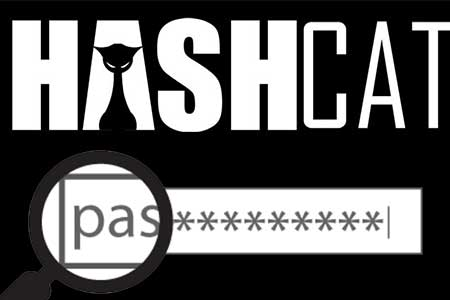
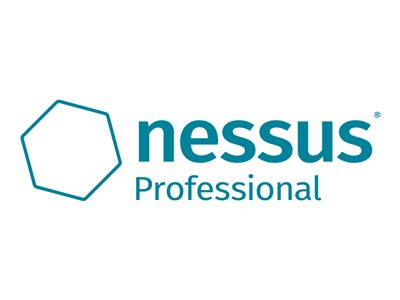
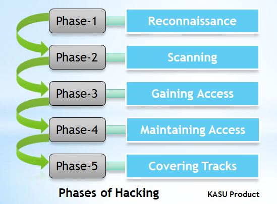

Kevin Mitnick - American computer security consultant, author and convicted hacker.
Ralph Echemendia - cyber security specialist, a.k.a "The Ethical Hacker."

Hashcat - versatile hacking tool that assists brute-force attacks
 Kali Linux - linux distribution for pentesting
Kali Linux - linux distribution for pentesting
Wireshark - Packet analyzer, tool for pentesting
 Maltego - software for intelligence and forensics
Maltego - software for intelligence and forensics

Nessus - vulnerability scanner
Network Mapper - network scanner for discovering hosts and services on a computer network
Pentesting tools for vulnerabilities

Phases of hacking